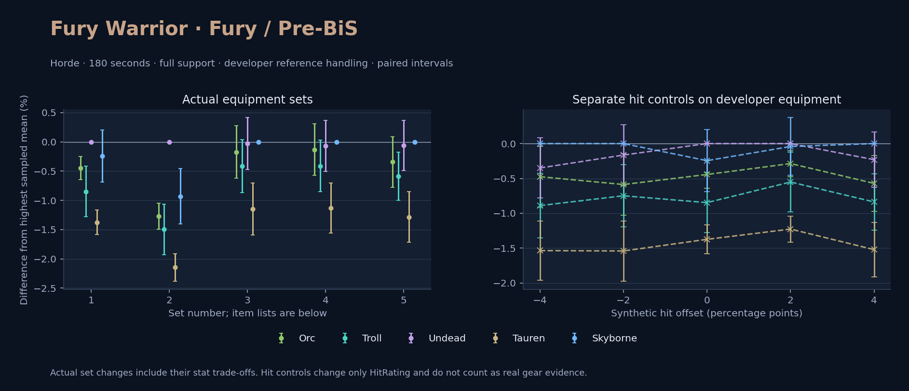

Horde · Orc / Troll / Undead / Tauren / Skyborne

No pet or guardian appears in the reference combat metrics. Reference: Orc, developer equipment, 180 seconds and full support. Pet choices remain those of the developer build.
WoWSims developer · Pre-BiS
Unmeasured proc rates: [{"source": "enchant", "id": 1900, "name": "Enchant Weapon - Crusader", "kind": "ppm", "origin": "vanilla"}, {"source": "item", "id": 12798, "name": "Annihilator", "kind": "ppm", "origin": "tbc"}, {"source": "enchant", "id": 1900, "name": "Enchant Weapon - Crusader", "kind": "ppm", "origin": "vanilla"}]
180 seconds, full support and original developer references. Hit below is generic sheet melee / spell hit; school and talent bonuses can be attached directly to spells.
| Race | DPS | Gap and interval | Generic hit | Replay |
|---|---|---|---|---|
| Undead | 865.22 | +0.000% ± 0.000 | 11.9% / 11.9% | Native input · Website JSON |
| Skyborne | 863.10 | -0.245% ± 0.445 | 11.9% / 11.9% | Native input · Website JSON |
| Orc | 861.39 | -0.443% ± 0.197 | 11.9% / 11.9% | Native input · Website JSON |
| Troll | 857.89 | -0.847% ± 0.431 | 11.9% / 11.9% | Native input · Website JSON |
| Tauren | 853.34 | -1.374% ± 0.206 | 11.9% / 11.9% | Native input · Website JSON |
| Slot | Item | ID | Enchant |
|---|---|---|---|
| Head | Lionheart Helm | 12640 | Arcanum of Rapidity |
| Neck | Amulet of the Darkmoon | 19491 | |
| Shoulder | Adventurer's Shoulders | 10263 | |
| Back | Howler's Furs | 272414 | Enchant Cloak - Agility |
| Chest | Dawn Armor | 252483 | Enchant Chest - Greater Stats |
| Wrist | Mighty Armsplints | 10147 | Enchant Bracer - Agility |
| Hands | Gauntlets of Heroism | 226861 | Enchant Gloves - Greater Agility |
| Waist | Belt of Preserved Heads | 20216 | |
| Legs | Titanic Leggings | 22385 | Arcanum of Rapidity |
| Feet | Battleboots of Heroism | 226857 | Enchant Boots - Greater Agility |
| Ring 1 | Cutthroat's Signet | 272408 | |
| Ring 2 | Band of the Better Half | 284716 | |
| Trinket 1 | Frozen Heart of the Mountain | 249469 | |
| Trinket 2 | Adaptive Combat Assistant | 272437 | |
| Main hand | Persuader | 22384 | Enchant Weapon - Crusader |
| Off hand | Annihilator | 12798 | Enchant Weapon - Crusader |
| Ranged / relic | Fahrad's Reloading Repeater | 22347 |
WoWSims developer · Developer P1
180 seconds, full support and original developer references. Hit below is generic sheet melee / spell hit; school and talent bonuses can be attached directly to spells.
| Race | DPS | Gap and interval | Generic hit | Replay |
|---|---|---|---|---|
| Undead | 502.74 | +0.000% ± 0.000 | 0.0% / 0.0% | Native input · Website JSON |
| Skyborne | 498.06 | -0.930% ± 0.474 | 0.0% / 0.0% | Native input · Website JSON |
| Orc | 496.35 | -1.271% ± 0.224 | 0.0% / 0.0% | Native input · Website JSON |
| Troll | 495.22 | -1.496% ± 0.433 | 0.0% / 0.0% | Native input · Website JSON |
| Tauren | 491.95 | -2.146% ± 0.235 | 0.0% / 0.0% | Native input · Website JSON |
| Slot | Item | ID | Enchant |
|---|---|---|---|
| Head | Enchanted Thorium Helm | 12620 | |
| Neck | Lady Alizabeth's Pendant | 13002 | |
| Shoulder | Dawnbringer Shoulders | 12625 | |
| Back | Mighty Cloak | 10148 | |
| Chest | Dark Iron Plate | 11604 | |
| Wrist | Bracers of Valor | 16735 | |
| Hands | Stonegrip Gauntlets | 13072 | |
| Waist | Girdle of Uther | 13077 | |
| Legs | Enchanted Thorium Leggings | 12619 | |
| Feet | Sapphiron's Scale Boots | 13070 | |
| Ring 1 | Band of the Hierophant | 13096 | |
| Ring 2 | Ring of Protection | 15855 | |
| Trinket 1 | Shard of the Splithooves | 10659 | |
| Trinket 2 | Demon's Blood | 10779 | |
| Main hand | Dawn's Edge | 12774 | |
| Off hand | Serathil | 13015 | |
| Ranged / relic | Gryphonwing Long Bow | 13022 |
Published ranked alternatives · Published pre-raid
Recorded source replacements: [{"slot": "shoulder", "from": 22241, "to": 19058, "publishedAlternativeRank": 1, "publishedEpDelta": -7.8, "reason": "First published alternative compatible with the current WoWSims database, class, faction and occupied slots."}, {"slot": "back", "from": 13340, "to": 272414, "publishedAlternativeRank": 1, "publishedEpDelta": -14.1, "reason": "First published alternative compatible with the current WoWSims database, class, faction and occupied slots."}, {"slot": "wrist", "from": 13400, "to": 13120, "publishedAlternativeRank": 1, "publishedEpDelta": -14.1, "reason": "First published alternative compatible with the current WoWSims database, class, faction and occupied slots."}, {"slot": "finger2", "from": 17713, "to": 7686, "publishedAlternativeRank": 3, "publishedEpDelta": -14.4, "reason": "First published alternative compatible with the current WoWSims database, class, faction and occupied slots."}, {"slot": "ranged", "from": 2100, "to": 13023, "publishedAlternativeRank": 1, "publishedEpDelta": -4.4, "reason": "First published alternative compatible with the current WoWSims database, class, faction and occupied slots."}]
Unmeasured proc rates: [{"source": "enchant", "id": 1900, "name": "Enchant Weapon - Crusader", "kind": "ppm", "origin": "vanilla"}, {"source": "enchant", "id": 1900, "name": "Enchant Weapon - Crusader", "kind": "ppm", "origin": "vanilla"}]
180 seconds, full support and original developer references. Hit below is generic sheet melee / spell hit; school and talent bonuses can be attached directly to spells.
| Race | DPS | Gap and interval | Generic hit | Replay |
|---|---|---|---|---|
| Skyborne | 839.18 | +0.000% ± 0.000 | 7.7% / 7.7% | Native input · Website JSON |
| Undead | 838.92 | -0.031% ± 0.445 | 7.7% / 7.7% | Native input · Website JSON |
| Orc | 837.74 | -0.172% ± 0.450 | 7.7% / 7.7% | Native input · Website JSON |
| Troll | 835.71 | -0.413% ± 0.450 | 7.7% / 7.7% | Native input · Website JSON |
| Tauren | 829.57 | -1.145% ± 0.443 | 7.7% / 7.7% | Native input · Website JSON |
| Slot | Item | ID | Enchant |
|---|---|---|---|
| Head | Lionheart Helm | 12640 | Lesser Arcane Amalgamation |
| Neck | Skibi's Pendant | 13089 | Enchant Necklace - Agility |
| Shoulder | Golden Mantle of the Dawn | 19058 | |
| Back | Howler's Furs | 272414 | Enchant Cloak - Agility |
| Chest | Timbermaw Tunic | 252484 | Enchant Chest - Greater Stats |
| Wrist | Deepfury Bracers | 13120 | Enchant Bracer - Agility |
| Hands | Timbermaw Brawlers | 19049 | Enchant Gloves - Superior Strength |
| Waist | Valiant's Waistguard | 272403 | |
| Legs | Titanic Leggings | 22385 | Lesser Arcane Amalgamation |
| Feet | Scalegut Treaders | 275618 | Enchant Boots - Greater Agility |
| Ring 1 | Cutthroat's Signet | 272408 | |
| Ring 2 | Ironspine's Eye | 7686 | |
| Trinket 1 | Adaptive Combat Assistant | 272437 | |
| Trinket 2 | Rune of the Guard Captain | 19120 | |
| Main hand | Persuader | 22384 | Enchant Weapon - Crusader |
| Off hand | Heartseeker | 12783 | Enchant Weapon - Crusader |
| Ranged / relic | Eaglehorn Long Bow | 13023 |
Published one-slot hit alternative · Published pre-raid
One source-listed alternative; at least 80% of the source slot score retained. Reported hit selects the contrast; only native stats determine simulation outcomes. This is an experimental combination, not an endorsed best set.
Recorded source replacements: [{"slot": "shoulder", "from": 22241, "to": 19058, "publishedAlternativeRank": 1, "publishedEpDelta": -7.8, "reason": "First published alternative compatible with the current WoWSims database, class, faction and occupied slots."}, {"slot": "back", "from": 13340, "to": 272414, "publishedAlternativeRank": 1, "publishedEpDelta": -14.1, "reason": "First published alternative compatible with the current WoWSims database, class, faction and occupied slots."}, {"slot": "wrist", "from": 13400, "to": 13120, "publishedAlternativeRank": 1, "publishedEpDelta": -14.1, "reason": "First published alternative compatible with the current WoWSims database, class, faction and occupied slots."}, {"slot": "finger2", "from": 17713, "to": 7686, "publishedAlternativeRank": 3, "publishedEpDelta": -14.4, "reason": "First published alternative compatible with the current WoWSims database, class, faction and occupied slots."}, {"slot": "ranged", "from": 2100, "to": 13023, "publishedAlternativeRank": 1, "publishedEpDelta": -4.4, "reason": "First published alternative compatible with the current WoWSims database, class, faction and occupied slots."}]
Unmeasured proc rates: [{"source": "enchant", "id": 1900, "name": "Enchant Weapon - Crusader", "kind": "ppm", "origin": "vanilla"}, {"source": "enchant", "id": 1900, "name": "Enchant Weapon - Crusader", "kind": "ppm", "origin": "vanilla"}]
180 seconds, full support and original developer references. Hit below is generic sheet melee / spell hit; school and talent bonuses can be attached directly to spells.
| Race | DPS | Gap and interval | Generic hit | Replay |
|---|---|---|---|---|
| Skyborne | 826.60 | +0.000% ± 0.000 | 6.7% / 6.7% | Native input · Website JSON |
| Undead | 826.04 | -0.067% ± 0.438 | 6.7% / 6.7% | Native input · Website JSON |
| Orc | 825.49 | -0.135% ± 0.440 | 6.7% / 6.7% | Native input · Website JSON |
| Troll | 823.19 | -0.412% ± 0.439 | 6.7% / 6.7% | Native input · Website JSON |
| Tauren | 817.26 | -1.130% ± 0.431 | 6.7% / 6.7% | Native input · Website JSON |
| Slot | Item | ID | Enchant |
|---|---|---|---|
| Head | Lionheart Helm | 12640 | Lesser Arcane Amalgamation |
| Neck | Skibi's Pendant | 13089 | Enchant Necklace - Agility |
| Shoulder | Golden Mantle of the Dawn | 19058 | |
| Back | Shifting Cloak | 18511 | Enchant Cloak - Agility |
| Chest | Timbermaw Tunic | 252484 | Enchant Chest - Greater Stats |
| Wrist | Deepfury Bracers | 13120 | Enchant Bracer - Agility |
| Hands | Timbermaw Brawlers | 19049 | Enchant Gloves - Superior Strength |
| Waist | Valiant's Waistguard | 272403 | |
| Legs | Titanic Leggings | 22385 | Lesser Arcane Amalgamation |
| Feet | Scalegut Treaders | 275618 | Enchant Boots - Greater Agility |
| Ring 1 | Cutthroat's Signet | 272408 | |
| Ring 2 | Ironspine's Eye | 7686 | |
| Trinket 1 | Adaptive Combat Assistant | 272437 | |
| Trinket 2 | Rune of the Guard Captain | 19120 | |
| Main hand | Persuader | 22384 | Enchant Weapon - Crusader |
| Off hand | Heartseeker | 12783 | Enchant Weapon - Crusader |
| Ranged / relic | Eaglehorn Long Bow | 13023 |
Published one-slot hit alternative · Published pre-raid
One source-listed alternative; at least 80% of the source slot score retained. Reported hit selects the contrast; only native stats determine simulation outcomes. This is an experimental combination, not an endorsed best set.
Recorded source replacements: [{"slot": "shoulder", "from": 22241, "to": 19058, "publishedAlternativeRank": 1, "publishedEpDelta": -7.8, "reason": "First published alternative compatible with the current WoWSims database, class, faction and occupied slots."}, {"slot": "back", "from": 13340, "to": 272414, "publishedAlternativeRank": 1, "publishedEpDelta": -14.1, "reason": "First published alternative compatible with the current WoWSims database, class, faction and occupied slots."}, {"slot": "wrist", "from": 13400, "to": 13120, "publishedAlternativeRank": 1, "publishedEpDelta": -14.1, "reason": "First published alternative compatible with the current WoWSims database, class, faction and occupied slots."}, {"slot": "finger2", "from": 17713, "to": 7686, "publishedAlternativeRank": 3, "publishedEpDelta": -14.4, "reason": "First published alternative compatible with the current WoWSims database, class, faction and occupied slots."}, {"slot": "ranged", "from": 2100, "to": 13023, "publishedAlternativeRank": 1, "publishedEpDelta": -4.4, "reason": "First published alternative compatible with the current WoWSims database, class, faction and occupied slots."}]
Unmeasured proc rates: [{"source": "enchant", "id": 1900, "name": "Enchant Weapon - Crusader", "kind": "ppm", "origin": "vanilla"}, {"source": "enchant", "id": 1900, "name": "Enchant Weapon - Crusader", "kind": "ppm", "origin": "vanilla"}]
180 seconds, full support and original developer references. Hit below is generic sheet melee / spell hit; school and talent bonuses can be attached directly to spells.
| Race | DPS | Gap and interval | Generic hit | Replay |
|---|---|---|---|---|
| Skyborne | 840.10 | +0.000% ± 0.000 | 8.7% / 8.7% | Native input · Website JSON |
| Undead | 839.57 | -0.063% ± 0.427 | 8.7% / 8.7% | Native input · Website JSON |
| Orc | 837.21 | -0.345% ± 0.434 | 8.7% / 8.7% | Native input · Website JSON |
| Troll | 835.15 | -0.590% ± 0.413 | 8.7% / 8.7% | Native input · Website JSON |
| Tauren | 829.31 | -1.285% ± 0.434 | 8.7% / 8.7% | Native input · Website JSON |
| Slot | Item | ID | Enchant |
|---|---|---|---|
| Head | Lionheart Helm | 12640 | Lesser Arcane Amalgamation |
| Neck | Skibi's Pendant | 13089 | Enchant Necklace - Agility |
| Shoulder | Golden Mantle of the Dawn | 19058 | |
| Back | Howler's Furs | 272414 | Enchant Cloak - Agility |
| Chest | Dawn Armor | 252483 | Enchant Chest - Greater Stats |
| Wrist | Deepfury Bracers | 13120 | Enchant Bracer - Agility |
| Hands | Timbermaw Brawlers | 19049 | Enchant Gloves - Superior Strength |
| Waist | Valiant's Waistguard | 272403 | |
| Legs | Titanic Leggings | 22385 | Lesser Arcane Amalgamation |
| Feet | Scalegut Treaders | 275618 | Enchant Boots - Greater Agility |
| Ring 1 | Cutthroat's Signet | 272408 | |
| Ring 2 | Ironspine's Eye | 7686 | |
| Trinket 1 | Adaptive Combat Assistant | 272437 | |
| Trinket 2 | Rune of the Guard Captain | 19120 | |
| Main hand | Persuader | 22384 | Enchant Weapon - Crusader |
| Off hand | Heartseeker | 12783 | Enchant Weapon - Crusader |
| Ranged / relic | Eaglehorn Long Bow | 13023 |
The same declared pool is available to every race. Each race keeps its best validation-sample set with its screening-selected racial policy. Separate samples confirm that choice, with fresh precision samples near the practical-loss boundary. Gaps use the highest sampled mean under that same duration, support and reference treatment as their reference. A zero reference gap does not certify a race; the main matrix also allows uncertainty in the leader.
| Pool | Seconds | Support | References | Race | DPS | Gap and interval | Racial policies / mana | Selected set | Generic hit: melee / spell | Replay |
|---|---|---|---|---|---|---|---|---|---|---|
| published-pre-raid | 60 | full | developer | Troll | 908.25 | +0.000% ± 0.00020,000 iterations | developer / developer / developerMana waits 0.0s | published-warrior-fury-horde-b237a4e676597015 | 7.7% / 7.7% | Input · Result · Stats |
| published-pre-raid | 60 | full | developer | Orc | 904.72 | -0.388% ± 0.07520,000 iterations | delay15 / developer / developerMana waits 0.0s | published-warrior-fury-horde-b237a4e676597015 | 7.7% / 7.7% | Input · Result · Stats |
| published-pre-raid | 60 | full | developer | Undead | 902.25 | -0.660% ± 0.08620,000 iterations | developer / developer / developerMana waits 0.0s | published-warrior-fury-horde-b237a4e676597015 | 7.7% / 7.7% | Input · Result · Stats |
| published-pre-raid | 60 | full | developer | Skyborne | 901.77 | -0.713% ± 0.15820,000 iterations | developer / developer / developerMana waits 0.0s | published-warrior-fury-horde-b237a4e676597015 | 7.7% / 7.7% | Input · Result · Stats |
| published-pre-raid | 60 | full | developer | Tauren | 892.18 | -1.769% ± 0.07820,000 iterations | developer / developer / developerMana waits 0.0s | published-warrior-fury-horde-b237a4e676597015 | 7.7% / 7.7% | Input · Result · Stats |
| published-pre-raid | 60 | full | explicit | Troll | 908.25 | +0.000% ± 0.00020,000 iterations | developer / developer / developerMana waits 0.0s | published-warrior-fury-horde-b237a4e676597015 | 7.7% / 7.7% | Input · Result · Stats |
| published-pre-raid | 60 | full | explicit | Orc | 904.72 | -0.388% ± 0.07520,000 iterations | delay15 / developer / developerMana waits 0.0s | published-warrior-fury-horde-b237a4e676597015 | 7.7% / 7.7% | Input · Result · Stats |
| published-pre-raid | 60 | full | explicit | Undead | 902.25 | -0.660% ± 0.08620,000 iterations | developer / developer / developerMana waits 0.0s | published-warrior-fury-horde-b237a4e676597015 | 7.7% / 7.7% | Input · Result · Stats |
| published-pre-raid | 60 | full | explicit | Skyborne | 901.77 | -0.713% ± 0.15820,000 iterations | developer / developer / developerMana waits 0.0s | published-warrior-fury-horde-b237a4e676597015 | 7.7% / 7.7% | Input · Result · Stats |
| published-pre-raid | 60 | full | explicit | Tauren | 892.18 | -1.769% ± 0.07820,000 iterations | developer / developer / developerMana waits 0.0s | published-warrior-fury-horde-b237a4e676597015 | 7.7% / 7.7% | Input · Result · Stats |
| published-pre-raid | 60 | self | developer | Troll | 484.50 | +0.000% ± 0.0005,000 iterations | developer / developer / developerMana waits 0.0s | published-warrior-fury-horde-b237a4e676597015-higher-hit | 8.7% / 8.7% | Input · Result · Stats |
| published-pre-raid | 60 | self | developer | Undead | 480.58 | -0.809% ± 0.3275,000 iterations | developer / developer / developerMana waits 0.0s | published-warrior-fury-horde-b237a4e676597015 | 7.7% / 7.7% | Input · Result · Stats |
| published-pre-raid | 60 | self | developer | Orc | 480.57 | -0.811% ± 0.1755,000 iterations | delay15 / developer / developerMana waits 0.0s | published-warrior-fury-horde-b237a4e676597015-higher-hit | 8.7% / 8.7% | Input · Result · Stats |
| published-pre-raid | 60 | self | developer | Skyborne | 480.47 | -0.833% ± 0.3765,000 iterations | developer / developer / developerMana waits 0.0s | published-warrior-fury-horde-b237a4e676597015-higher-hit | 8.7% / 8.7% | Input · Result · Stats |
| published-pre-raid | 60 | self | developer | Tauren | 473.43 | -2.286% ± 0.1815,000 iterations | developer / developer / developerMana waits 0.0s | published-warrior-fury-horde-b237a4e676597015-higher-hit | 8.7% / 8.7% | Input · Result · Stats |
| published-pre-raid | 60 | self | explicit | Troll | 484.50 | +0.000% ± 0.0005,000 iterations | developer / developer / developerMana waits 0.0s | published-warrior-fury-horde-b237a4e676597015-higher-hit | 8.7% / 8.7% | Input · Result · Stats |
| published-pre-raid | 60 | self | explicit | Undead | 480.58 | -0.809% ± 0.3275,000 iterations | developer / developer / developerMana waits 0.0s | published-warrior-fury-horde-b237a4e676597015 | 7.7% / 7.7% | Input · Result · Stats |
| published-pre-raid | 60 | self | explicit | Orc | 480.57 | -0.811% ± 0.1755,000 iterations | delay15 / developer / developerMana waits 0.0s | published-warrior-fury-horde-b237a4e676597015-higher-hit | 8.7% / 8.7% | Input · Result · Stats |
| published-pre-raid | 60 | self | explicit | Skyborne | 480.47 | -0.833% ± 0.3765,000 iterations | developer / developer / developerMana waits 0.0s | published-warrior-fury-horde-b237a4e676597015-higher-hit | 8.7% / 8.7% | Input · Result · Stats |
| published-pre-raid | 60 | self | explicit | Tauren | 473.43 | -2.286% ± 0.1815,000 iterations | developer / developer / developerMana waits 0.0s | published-warrior-fury-horde-b237a4e676597015-higher-hit | 8.7% / 8.7% | Input · Result · Stats |
| published-pre-raid | 180 | full | developer | Skyborne | 840.69 | +0.000% ± 0.00020,000 iterations | developer / developer / developerMana waits 0.0s | published-warrior-fury-horde-b237a4e676597015-higher-hit | 8.7% / 8.7% | Input · Result · Stats · Website JSON |
| published-pre-raid | 180 | full | developer | Orc | 839.94 | -0.090% ± 0.10020,000 iterations | oncd / developer / developerMana waits 0.0s | published-warrior-fury-horde-b237a4e676597015 | 7.7% / 7.7% | Input · Result · Stats · Website JSON |
| published-pre-raid | 180 | full | developer | Undead | 839.89 | -0.095% ± 0.09720,000 iterations | developer / developer / developerMana waits 0.0s | published-warrior-fury-horde-b237a4e676597015-higher-hit | 8.7% / 8.7% | Input · Result · Stats · Website JSON |
| published-pre-raid | 180 | full | developer | Troll | 837.69 | -0.357% ± 0.09920,000 iterations | developer / developer / developerMana waits 0.0s | published-warrior-fury-horde-b237a4e676597015 | 7.7% / 7.7% | Input · Result · Stats · Website JSON |
| published-pre-raid | 180 | full | developer | Tauren | 831.73 | -1.066% ± 0.09920,000 iterations | developer / developer / developerMana waits 0.0s | published-warrior-fury-horde-b237a4e676597015 | 7.7% / 7.7% | Input · Result · Stats · Website JSON |
| published-pre-raid | 180 | full | explicit | Skyborne | 840.69 | +0.000% ± 0.00020,000 iterations | developer / developer / developerMana waits 0.0s | published-warrior-fury-horde-b237a4e676597015-higher-hit | 8.7% / 8.7% | Input · Result · Stats |
| published-pre-raid | 180 | full | explicit | Orc | 839.94 | -0.090% ± 0.10020,000 iterations | oncd / developer / developerMana waits 0.0s | published-warrior-fury-horde-b237a4e676597015 | 7.7% / 7.7% | Input · Result · Stats |
| published-pre-raid | 180 | full | explicit | Undead | 839.89 | -0.095% ± 0.09720,000 iterations | developer / developer / developerMana waits 0.0s | published-warrior-fury-horde-b237a4e676597015-higher-hit | 8.7% / 8.7% | Input · Result · Stats |
| published-pre-raid | 180 | full | explicit | Troll | 837.69 | -0.357% ± 0.09920,000 iterations | developer / developer / developerMana waits 0.0s | published-warrior-fury-horde-b237a4e676597015 | 7.7% / 7.7% | Input · Result · Stats |
| published-pre-raid | 180 | full | explicit | Tauren | 831.73 | -1.066% ± 0.09920,000 iterations | developer / developer / developerMana waits 0.0s | published-warrior-fury-horde-b237a4e676597015 | 7.7% / 7.7% | Input · Result · Stats |
| published-pre-raid | 180 | self | developer | Undead | 434.84 | +0.000% ± 0.00020,000 iterations | developer / developer / developerMana waits 0.0s | published-warrior-fury-horde-b237a4e676597015 | 7.7% / 7.7% | Input · Result · Stats |
| published-pre-raid | 180 | self | developer | Skyborne | 434.66 | -0.041% ± 0.12120,000 iterations | developer / developer / developerMana waits 0.0s | published-warrior-fury-horde-b237a4e676597015 | 7.7% / 7.7% | Input · Result · Stats |
| published-pre-raid | 180 | self | developer | Troll | 432.24 | -0.598% ± 0.06620,000 iterations | developer / developer / developerMana waits 0.0s | published-warrior-fury-horde-b237a4e676597015 | 7.7% / 7.7% | Input · Result · Stats |
| published-pre-raid | 180 | self | developer | Orc | 431.22 | -0.833% ± 0.05420,000 iterations | oncd / developer / developerMana waits 0.0s | published-warrior-fury-horde-b237a4e676597015 | 7.7% / 7.7% | Input · Result · Stats |
| published-pre-raid | 180 | self | developer | Tauren | 427.71 | -1.640% ± 0.05720,000 iterations | developer / developer / developerMana waits 0.0s | published-warrior-fury-horde-b237a4e676597015 | 7.7% / 7.7% | Input · Result · Stats |
| published-pre-raid | 180 | self | explicit | Undead | 434.84 | +0.000% ± 0.00020,000 iterations | developer / developer / developerMana waits 0.0s | published-warrior-fury-horde-b237a4e676597015 | 7.7% / 7.7% | Input · Result · Stats |
| published-pre-raid | 180 | self | explicit | Skyborne | 434.66 | -0.041% ± 0.12120,000 iterations | developer / developer / developerMana waits 0.0s | published-warrior-fury-horde-b237a4e676597015 | 7.7% / 7.7% | Input · Result · Stats |
| published-pre-raid | 180 | self | explicit | Troll | 432.24 | -0.598% ± 0.06620,000 iterations | developer / developer / developerMana waits 0.0s | published-warrior-fury-horde-b237a4e676597015 | 7.7% / 7.7% | Input · Result · Stats |
| published-pre-raid | 180 | self | explicit | Orc | 431.22 | -0.833% ± 0.05420,000 iterations | oncd / developer / developerMana waits 0.0s | published-warrior-fury-horde-b237a4e676597015 | 7.7% / 7.7% | Input · Result · Stats |
| published-pre-raid | 180 | self | explicit | Tauren | 427.71 | -1.640% ± 0.05720,000 iterations | developer / developer / developerMana waits 0.0s | published-warrior-fury-horde-b237a4e676597015 | 7.7% / 7.7% | Input · Result · Stats |
| published-pre-raid | 300 | full | developer | Skyborne | 840.73 | +0.000% ± 0.00020,000 iterations | developer / developer / developerMana waits 0.0s | published-warrior-fury-horde-b237a4e676597015 | 7.7% / 7.7% | Input · Result · Stats |
| published-pre-raid | 300 | full | developer | Undead | 838.65 | -0.247% ± 0.07820,000 iterations | developer / developer / developerMana waits 0.0s | published-warrior-fury-horde-b237a4e676597015 | 7.7% / 7.7% | Input · Result · Stats |
| published-pre-raid | 300 | full | developer | Orc | 836.53 | -0.500% ± 0.07820,000 iterations | delay15 / developer / developerMana waits 0.0s | published-warrior-fury-horde-b237a4e676597015 | 7.7% / 7.7% | Input · Result · Stats |
| published-pre-raid | 300 | full | developer | Troll | 835.67 | -0.602% ± 0.07720,000 iterations | delay15 / developer / developerMana waits 0.0s | published-warrior-fury-horde-b237a4e676597015 | 7.7% / 7.7% | Input · Result · Stats |
| published-pre-raid | 300 | full | developer | Tauren | 829.38 | -1.350% ± 0.07720,000 iterations | developer / developer / developerMana waits 0.0s | published-warrior-fury-horde-b237a4e676597015 | 7.7% / 7.7% | Input · Result · Stats |
| published-pre-raid | 300 | full | explicit | Skyborne | 840.73 | +0.000% ± 0.00020,000 iterations | developer / developer / developerMana waits 0.0s | published-warrior-fury-horde-b237a4e676597015 | 7.7% / 7.7% | Input · Result · Stats |
| published-pre-raid | 300 | full | explicit | Undead | 838.65 | -0.247% ± 0.07820,000 iterations | developer / developer / developerMana waits 0.0s | published-warrior-fury-horde-b237a4e676597015 | 7.7% / 7.7% | Input · Result · Stats |
| published-pre-raid | 300 | full | explicit | Orc | 836.53 | -0.500% ± 0.07820,000 iterations | delay15 / developer / developerMana waits 0.0s | published-warrior-fury-horde-b237a4e676597015 | 7.7% / 7.7% | Input · Result · Stats |
| published-pre-raid | 300 | full | explicit | Troll | 835.67 | -0.602% ± 0.07720,000 iterations | delay15 / developer / developerMana waits 0.0s | published-warrior-fury-horde-b237a4e676597015 | 7.7% / 7.7% | Input · Result · Stats |
| published-pre-raid | 300 | full | explicit | Tauren | 829.38 | -1.350% ± 0.07720,000 iterations | developer / developer / developerMana waits 0.0s | published-warrior-fury-horde-b237a4e676597015 | 7.7% / 7.7% | Input · Result · Stats |
| published-pre-raid | 300 | self | developer | Skyborne | 438.13 | +0.000% ± 0.00020,000 iterations | developer / developer / developerMana waits 0.0s | published-warrior-fury-horde-b237a4e676597015-higher-hit | 8.7% / 8.7% | Input · Result · Stats |
| published-pre-raid | 300 | self | developer | Undead | 438.02 | -0.024% ± 0.09820,000 iterations | developer / developer / developerMana waits 0.0s | published-warrior-fury-horde-b237a4e676597015 | 7.7% / 7.7% | Input · Result · Stats |
| published-pre-raid | 300 | self | developer | Troll | 436.34 | -0.409% ± 0.09820,000 iterations | delay15 / developer / developerMana waits 0.0s | published-warrior-fury-horde-b237a4e676597015 | 7.7% / 7.7% | Input · Result · Stats |
| published-pre-raid | 300 | self | developer | Orc | 434.88 | -0.741% ± 0.09820,000 iterations | delay15 / developer / developerMana waits 0.0s | published-warrior-fury-horde-b237a4e676597015 | 7.7% / 7.7% | Input · Result · Stats |
| published-pre-raid | 300 | self | developer | Tauren | 430.95 | -1.638% ± 0.09720,000 iterations | developer / developer / developerMana waits 0.0s | published-warrior-fury-horde-b237a4e676597015 | 7.7% / 7.7% | Input · Result · Stats |
| published-pre-raid | 300 | self | explicit | Skyborne | 438.13 | +0.000% ± 0.00020,000 iterations | developer / developer / developerMana waits 0.0s | published-warrior-fury-horde-b237a4e676597015-higher-hit | 8.7% / 8.7% | Input · Result · Stats |
| published-pre-raid | 300 | self | explicit | Undead | 438.02 | -0.024% ± 0.09820,000 iterations | developer / developer / developerMana waits 0.0s | published-warrior-fury-horde-b237a4e676597015 | 7.7% / 7.7% | Input · Result · Stats |
| published-pre-raid | 300 | self | explicit | Troll | 436.34 | -0.409% ± 0.09820,000 iterations | delay15 / developer / developerMana waits 0.0s | published-warrior-fury-horde-b237a4e676597015 | 7.7% / 7.7% | Input · Result · Stats |
| published-pre-raid | 300 | self | explicit | Orc | 434.88 | -0.741% ± 0.09820,000 iterations | delay15 / developer / developerMana waits 0.0s | published-warrior-fury-horde-b237a4e676597015 | 7.7% / 7.7% | Input · Result · Stats |
| published-pre-raid | 300 | self | explicit | Tauren | 430.95 | -1.638% ± 0.09720,000 iterations | developer / developer / developerMana waits 0.0s | published-warrior-fury-horde-b237a4e676597015 | 7.7% / 7.7% | Input · Result · Stats |
| developer-reference | 60 | full | developer | Troll | 927.75 | +0.000% ± 0.00020,000 iterations | delay15 / developer / developerMana waits 0.0s | developer | 11.9% / 11.9% | Input · Result · Stats |
| developer-reference | 60 | full | developer | Skyborne | 923.27 | -0.482% ± 0.14320,000 iterations | developer / developer / developerMana waits 0.0s | developer | 11.9% / 11.9% | Input · Result · Stats |
| developer-reference | 60 | full | developer | Orc | 922.23 | -0.594% ± 0.13720,000 iterations | delay15 / developer / developerMana waits 0.0s | developer | 11.9% / 11.9% | Input · Result · Stats |
| developer-reference | 60 | full | developer | Undead | 920.99 | -0.728% ± 0.13820,000 iterations | developer / developer / developerMana waits 0.0s | developer | 11.9% / 11.9% | Input · Result · Stats |
| developer-reference | 60 | full | developer | Tauren | 909.77 | -1.938% ± 0.13620,000 iterations | developer / developer / developerMana waits 0.0s | developer | 11.9% / 11.9% | Input · Result · Stats |
| developer-reference | 60 | full | explicit | Troll | 927.75 | +0.000% ± 0.00020,000 iterations | delay15 / developer / developerMana waits 0.0s | developer | 11.9% / 11.9% | Input · Result · Stats |
| developer-reference | 60 | full | explicit | Skyborne | 923.27 | -0.482% ± 0.14320,000 iterations | developer / developer / developerMana waits 0.0s | developer | 11.9% / 11.9% | Input · Result · Stats |
| developer-reference | 60 | full | explicit | Orc | 922.23 | -0.594% ± 0.13720,000 iterations | delay15 / developer / developerMana waits 0.0s | developer | 11.9% / 11.9% | Input · Result · Stats |
| developer-reference | 60 | full | explicit | Undead | 920.99 | -0.728% ± 0.13820,000 iterations | developer / developer / developerMana waits 0.0s | developer | 11.9% / 11.9% | Input · Result · Stats |
| developer-reference | 60 | full | explicit | Tauren | 909.77 | -1.938% ± 0.13620,000 iterations | developer / developer / developerMana waits 0.0s | developer | 11.9% / 11.9% | Input · Result · Stats |
| developer-reference | 60 | self | developer | Troll | 492.73 | +0.000% ± 0.0005,000 iterations | developer / developer / developerMana waits 0.0s | developer | 11.9% / 11.9% | Input · Result · Stats |
| developer-reference | 60 | self | developer | Undead | 488.28 | -0.905% ± 0.1985,000 iterations | developer / developer / developerMana waits 0.0s | developer | 11.9% / 11.9% | Input · Result · Stats |
| developer-reference | 60 | self | developer | Skyborne | 488.24 | -0.911% ± 0.3435,000 iterations | developer / developer / developerMana waits 0.0s | developer | 11.9% / 11.9% | Input · Result · Stats |
| developer-reference | 60 | self | developer | Orc | 487.21 | -1.121% ± 0.1635,000 iterations | delay15 / developer / developerMana waits 0.0s | developer | 11.9% / 11.9% | Input · Result · Stats |
| developer-reference | 60 | self | developer | Tauren | 479.85 | -2.614% ± 0.1725,000 iterations | developer / developer / developerMana waits 0.0s | developer | 11.9% / 11.9% | Input · Result · Stats |
| developer-reference | 60 | self | explicit | Troll | 492.73 | +0.000% ± 0.0005,000 iterations | developer / developer / developerMana waits 0.0s | developer | 11.9% / 11.9% | Input · Result · Stats |
| developer-reference | 60 | self | explicit | Undead | 488.28 | -0.905% ± 0.1985,000 iterations | developer / developer / developerMana waits 0.0s | developer | 11.9% / 11.9% | Input · Result · Stats |
| developer-reference | 60 | self | explicit | Skyborne | 488.24 | -0.911% ± 0.3435,000 iterations | developer / developer / developerMana waits 0.0s | developer | 11.9% / 11.9% | Input · Result · Stats |
| developer-reference | 60 | self | explicit | Orc | 487.21 | -1.121% ± 0.1635,000 iterations | delay15 / developer / developerMana waits 0.0s | developer | 11.9% / 11.9% | Input · Result · Stats |
| developer-reference | 60 | self | explicit | Tauren | 479.85 | -2.614% ± 0.1725,000 iterations | developer / developer / developerMana waits 0.0s | developer | 11.9% / 11.9% | Input · Result · Stats |
| developer-reference | 180 | full | developer | Skyborne | 867.16 | +0.000% ± 0.00020,000 iterations | developer / developer / developerMana waits 0.0s | developer | 11.9% / 11.9% | Input · Result · Stats · Website JSON |
| developer-reference | 180 | full | developer | Undead | 864.52 | -0.304% ± 0.09420,000 iterations | developer / developer / developerMana waits 0.0s | developer | 11.9% / 11.9% | Input · Result · Stats · Website JSON |
| developer-reference | 180 | full | developer | Orc | 862.11 | -0.582% ± 0.09420,000 iterations | oncd / developer / developerMana waits 0.0s | developer | 11.9% / 11.9% | Input · Result · Stats · Website JSON |
| developer-reference | 180 | full | developer | Troll | 859.38 | -0.897% ± 0.09520,000 iterations | oncd / developer / developerMana waits 0.0s | developer | 11.9% / 11.9% | Input · Result · Stats · Website JSON |
| developer-reference | 180 | full | developer | Tauren | 853.79 | -1.542% ± 0.09320,000 iterations | developer / developer / developerMana waits 0.0s | developer | 11.9% / 11.9% | Input · Result · Stats · Website JSON |
| developer-reference | 180 | full | explicit | Skyborne | 867.16 | +0.000% ± 0.00020,000 iterations | developer / developer / developerMana waits 0.0s | developer | 11.9% / 11.9% | Input · Result · Stats |
| developer-reference | 180 | full | explicit | Undead | 864.52 | -0.304% ± 0.09420,000 iterations | developer / developer / developerMana waits 0.0s | developer | 11.9% / 11.9% | Input · Result · Stats |
| developer-reference | 180 | full | explicit | Orc | 862.11 | -0.582% ± 0.09420,000 iterations | oncd / developer / developerMana waits 0.0s | developer | 11.9% / 11.9% | Input · Result · Stats |
| developer-reference | 180 | full | explicit | Troll | 859.38 | -0.897% ± 0.09520,000 iterations | oncd / developer / developerMana waits 0.0s | developer | 11.9% / 11.9% | Input · Result · Stats |
| developer-reference | 180 | full | explicit | Tauren | 853.79 | -1.542% ± 0.09320,000 iterations | developer / developer / developerMana waits 0.0s | developer | 11.9% / 11.9% | Input · Result · Stats |
| developer-reference | 180 | self | developer | Skyborne | 440.98 | +0.000% ± 0.00020,000 iterations | developer / developer / developerMana waits 0.0s | developer | 11.9% / 11.9% | Input · Result · Stats |
| developer-reference | 180 | self | developer | Undead | 440.36 | -0.142% ± 0.11620,000 iterations | developer / developer / developerMana waits 0.0s | developer | 11.9% / 11.9% | Input · Result · Stats |
| developer-reference | 180 | self | developer | Troll | 438.02 | -0.672% ± 0.11520,000 iterations | developer / developer / developerMana waits 0.0s | developer | 11.9% / 11.9% | Input · Result · Stats |
| developer-reference | 180 | self | developer | Orc | 437.07 | -0.888% ± 0.11620,000 iterations | delay15 / developer / developerMana waits 0.0s | developer | 11.9% / 11.9% | Input · Result · Stats |
| developer-reference | 180 | self | developer | Tauren | 432.66 | -1.888% ± 0.11520,000 iterations | developer / developer / developerMana waits 0.0s | developer | 11.9% / 11.9% | Input · Result · Stats |
| developer-reference | 180 | self | explicit | Skyborne | 440.98 | +0.000% ± 0.00020,000 iterations | developer / developer / developerMana waits 0.0s | developer | 11.9% / 11.9% | Input · Result · Stats |
| developer-reference | 180 | self | explicit | Undead | 440.36 | -0.142% ± 0.11620,000 iterations | developer / developer / developerMana waits 0.0s | developer | 11.9% / 11.9% | Input · Result · Stats |
| developer-reference | 180 | self | explicit | Troll | 438.02 | -0.672% ± 0.11520,000 iterations | developer / developer / developerMana waits 0.0s | developer | 11.9% / 11.9% | Input · Result · Stats |
| developer-reference | 180 | self | explicit | Orc | 437.07 | -0.888% ± 0.11620,000 iterations | delay15 / developer / developerMana waits 0.0s | developer | 11.9% / 11.9% | Input · Result · Stats |
| developer-reference | 180 | self | explicit | Tauren | 432.66 | -1.888% ± 0.11520,000 iterations | developer / developer / developerMana waits 0.0s | developer | 11.9% / 11.9% | Input · Result · Stats |
| developer-reference | 300 | full | developer | Skyborne | 865.13 | +0.000% ± 0.00020,000 iterations | developer / developer / developerMana waits 0.0s | developer | 11.9% / 11.9% | Input · Result · Stats |
| developer-reference | 300 | full | developer | Undead | 862.97 | -0.249% ± 0.07320,000 iterations | developer / developer / developerMana waits 0.0s | developer | 11.9% / 11.9% | Input · Result · Stats |
| developer-reference | 300 | full | developer | Troll | 861.45 | -0.426% ± 0.07420,000 iterations | developer / developer / developerMana waits 0.0s | developer | 11.9% / 11.9% | Input · Result · Stats |
| developer-reference | 300 | full | developer | Orc | 859.34 | -0.670% ± 0.07420,000 iterations | delay15 / developer / developerMana waits 0.0s | developer | 11.9% / 11.9% | Input · Result · Stats |
| developer-reference | 300 | full | developer | Tauren | 852.25 | -1.488% ± 0.07320,000 iterations | developer / developer / developerMana waits 0.0s | developer | 11.9% / 11.9% | Input · Result · Stats |
| developer-reference | 300 | full | explicit | Skyborne | 865.13 | +0.000% ± 0.00020,000 iterations | developer / developer / developerMana waits 0.0s | developer | 11.9% / 11.9% | Input · Result · Stats |
| developer-reference | 300 | full | explicit | Undead | 862.97 | -0.249% ± 0.07320,000 iterations | developer / developer / developerMana waits 0.0s | developer | 11.9% / 11.9% | Input · Result · Stats |
| developer-reference | 300 | full | explicit | Troll | 861.45 | -0.426% ± 0.07420,000 iterations | developer / developer / developerMana waits 0.0s | developer | 11.9% / 11.9% | Input · Result · Stats |
| developer-reference | 300 | full | explicit | Orc | 859.34 | -0.670% ± 0.07420,000 iterations | delay15 / developer / developerMana waits 0.0s | developer | 11.9% / 11.9% | Input · Result · Stats |
| developer-reference | 300 | full | explicit | Tauren | 852.25 | -1.488% ± 0.07320,000 iterations | developer / developer / developerMana waits 0.0s | developer | 11.9% / 11.9% | Input · Result · Stats |
| developer-reference | 300 | self | developer | Skyborne | 445.85 | +0.000% ± 0.00020,000 iterations | developer / developer / developerMana waits 0.0s | developer | 11.9% / 11.9% | Input · Result · Stats |
| developer-reference | 300 | self | developer | Undead | 445.32 | -0.120% ± 0.09320,000 iterations | developer / developer / developerMana waits 0.0s | developer | 11.9% / 11.9% | Input · Result · Stats |
| developer-reference | 300 | self | developer | Troll | 444.14 | -0.384% ± 0.09520,000 iterations | developer / developer / developerMana waits 0.0s | developer | 11.9% / 11.9% | Input · Result · Stats |
| developer-reference | 300 | self | developer | Orc | 441.53 | -0.968% ± 0.09220,000 iterations | delay15 / developer / developerMana waits 0.0s | developer | 11.9% / 11.9% | Input · Result · Stats |
| developer-reference | 300 | self | developer | Tauren | 437.66 | -1.837% ± 0.09120,000 iterations | developer / developer / developerMana waits 0.0s | developer | 11.9% / 11.9% | Input · Result · Stats |
| developer-reference | 300 | self | explicit | Skyborne | 445.85 | +0.000% ± 0.00020,000 iterations | developer / developer / developerMana waits 0.0s | developer | 11.9% / 11.9% | Input · Result · Stats |
| developer-reference | 300 | self | explicit | Undead | 445.32 | -0.120% ± 0.09320,000 iterations | developer / developer / developerMana waits 0.0s | developer | 11.9% / 11.9% | Input · Result · Stats |
| developer-reference | 300 | self | explicit | Troll | 444.14 | -0.384% ± 0.09520,000 iterations | developer / developer / developerMana waits 0.0s | developer | 11.9% / 11.9% | Input · Result · Stats |
| developer-reference | 300 | self | explicit | Orc | 441.53 | -0.968% ± 0.09220,000 iterations | delay15 / developer / developerMana waits 0.0s | developer | 11.9% / 11.9% | Input · Result · Stats |
| developer-reference | 300 | self | explicit | Tauren | 437.66 | -1.837% ± 0.09120,000 iterations | developer / developer / developerMana waits 0.0s | developer | 11.9% / 11.9% | Input · Result · Stats |
180 seconds, full support and the developer equipment anchor. These checks test creature sensitivity without a full gear search.
| Target | References | Race | DPS | Gap and interval | Replay |
|---|---|---|---|---|---|
| beast | developer | Troll | 899.67 | +0.000% ± 0.000 | Input · Result |
| beast | developer | Undead | 865.22 | -3.829% ± 0.418 | Input · Result |
| beast | developer | Skyborne | 863.10 | -4.064% ± 0.417 | Input · Result |
| beast | developer | Orc | 861.39 | -4.255% ± 0.417 | Input · Result |
| beast | developer | Tauren | 853.34 | -5.150% ± 0.410 | Input · Result |
| beast | explicit | Troll | 899.67 | +0.000% ± 0.000 | Input · Result |
| beast | explicit | Undead | 865.22 | -3.829% ± 0.418 | Input · Result |
| beast | explicit | Skyborne | 863.10 | -4.064% ± 0.417 | Input · Result |
| beast | explicit | Orc | 861.39 | -4.255% ± 0.417 | Input · Result |
| beast | explicit | Tauren | 853.34 | -5.150% ± 0.410 | Input · Result |
| elemental | developer | Skyborne | 905.13 | +0.000% ± 0.000 | Input · Result |
| elemental | developer | Undead | 865.22 | -4.409% ± 0.426 | Input · Result |
| elemental | developer | Orc | 861.39 | -4.833% ± 0.427 | Input · Result |
| elemental | developer | Troll | 857.89 | -5.219% ± 0.412 | Input · Result |
| elemental | developer | Tauren | 853.34 | -5.722% ± 0.418 | Input · Result |
| elemental | explicit | Skyborne | 905.13 | +0.000% ± 0.000 | Input · Result |
| elemental | explicit | Undead | 865.22 | -4.409% ± 0.426 | Input · Result |
| elemental | explicit | Orc | 861.39 | -4.833% ± 0.427 | Input · Result |
| elemental | explicit | Troll | 857.89 | -5.219% ± 0.412 | Input · Result |
| elemental | explicit | Tauren | 853.34 | -5.722% ± 0.418 | Input · Result |
Some equipment uses unmeasured proc rates
These known-issue notes are source context. Runtime checks establish current cast coverage, including Mutilate. They do not prove every mechanic matches the game.